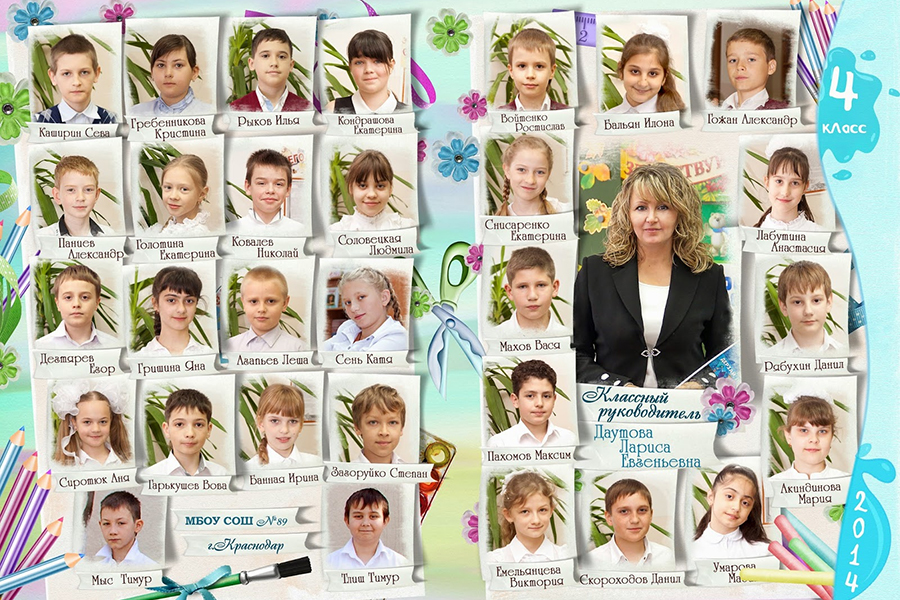
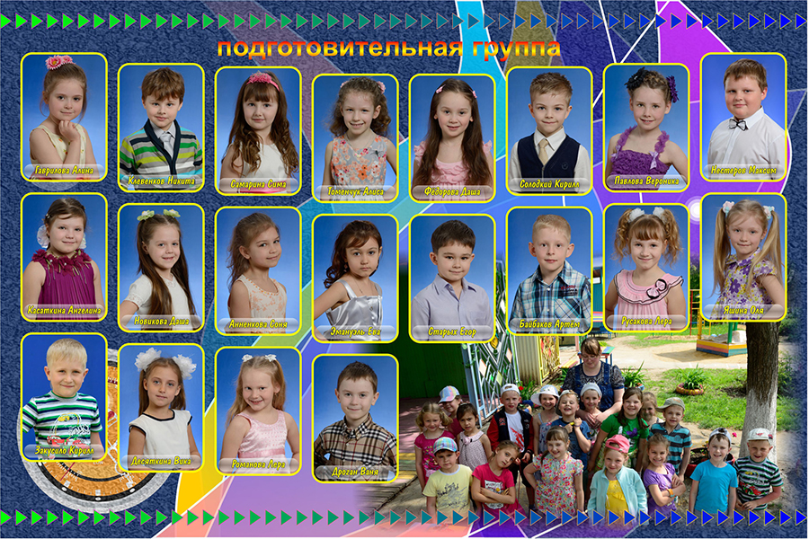
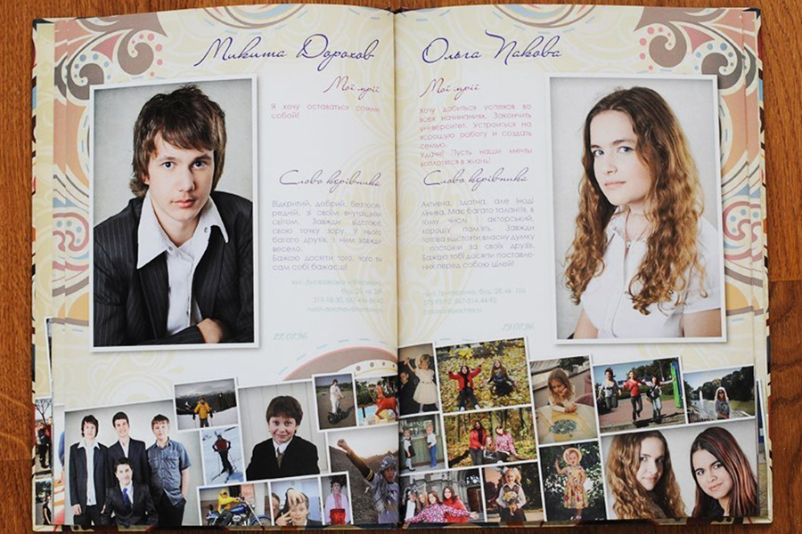
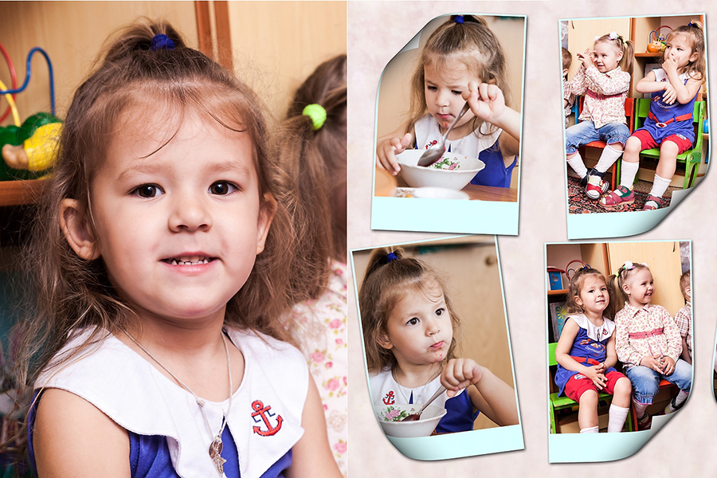

Выпускные фотоальбомы
Выпускная Книга – глянцевый «Аттестат зрелости» с фотографиями, пожеланиями, анкетами и автографами в твердом переплете. Вообще Выпускная фотокнига - это современный образ того, что мы раньше называли: выпускные альбомы для школьников и студентов или детские выпускные фотоальбомы для детского сада.

Выпускная Книга – это многостраничное, полноцветное, полиграфическое издание в книжном или альбом переплете с логотипом школы на обложке или с полноцветной твердой обложкой.

О выпускной книге
Согласитесь, что в душе мы все живем ожиданием праздника. И конечно хотелось бы, чтобы выпускной бал запомнился нам, нашим детям или ученикам на всю жизнь. Как же добиться того, чтобы воспоминания о школьных или институтских годах согревали нас всю оставшуюся жизнь. Кроме школьного аттестата или университетского диплома с самыми беззаботными годами нас будет соединять разве что выпускной альбом или более стильная его версия - выпускная книга.

Выпускная книга или фотоальбом выпускника
Речь уже идет не о простом фотоальбоме, а о настоящей выпускной книге, имеющей все необходимые разделы: о школе, об учителях, о напряженной учебе и веселом проведении праздников. Разумеется, очень тщательно подбираются фотографии и тексты для личных страниц учеников или студентов. Кстати для выпускников детских садов такая книга также станет занимательной и интересной.

Конечно же все не ограничивается официальными фотографиями выпускников. Обязательно проводится фотосессия, когда вчерашние школьники и студенты дают волю своим эмоциям и просто "дурачатся" - им будет о чем вспомнить, просматривая в будущем свой выпускной альбом.